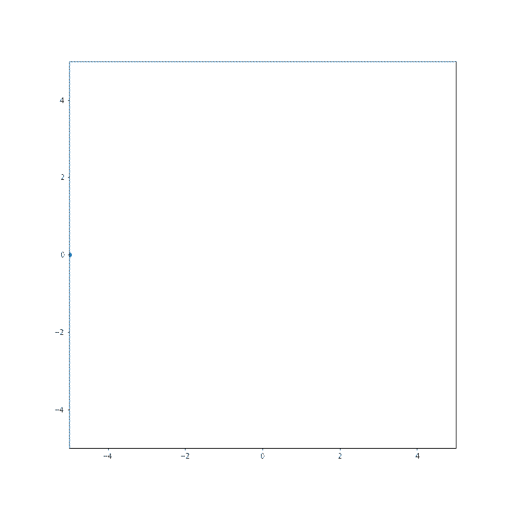

Il tipico problema di controllo ottimo è caratterizzato da un (sistema di) ODE (equazioni differenziali ordinarie) in cui l’incognita è una coppia di funzioni $(x(t), u(t))$. Consideriamo un intervallo di tempo $[0,T]$ e $N \geq 1$. La funzione $x \colon [0,T] \to \mathbb{R}^N$ rappresenta una traiettoria nello spazio $\mathbb{R}^N$ e $u \colon [0,T] \to \mathbb{R}^M$ è il cosiddetto controllo.
Il sistema di ODE è della forma \(\begin{equation} \left\{ \begin{aligned} \dot x(t) & = f(x(t),u(t)) \, , \quad t \in [0,T] \, ,\\ x(0) & = x^0 \, , \end{aligned} \right. \end{equation}\) dove $x_0$ è un dato iniziale fissato e $f \colon \mathbb{R}^N {\times} \mathbb{R}^M \to \mathbb{R}^N$ e una funzione con una opportuna regolarità. Dato un controllo $u(t)$, esiste una unica soluzione del sistema di ODE (questo è un teorema che vale sotto debolissime ipotesi su $u(t)$, simile al teorema di Cauchy-Lipschitz per le ODE).
Al sistema di ODE è accoppiato un costo (o guadagno) per il controllo, tipicamente della forma \(J(u) := \int_0^T L(t,x(t),u(t)) \, \mathrm{d} t \, ,\) dove $x(t)$ è vincolato a essere la soluzione del sistema di ODE dato il controllo $u(t)$.
Obiettivo: lo scopo del problema di controllo ottimo è quello di trovare $u \colon [0,T] \to \mathbb{R}^M$ tale che il costo $J$ sia minimizzato (nel caso in cui $J$ rappresenti un guadagno, lo scopo è quello di massimizzarlo).
Costo: Il costo può avere anche altre forme che rispecchiano diversi obiettivi. Il tempo finale $T$ può anche essere variabile, come è tipico nei problemi di tempo ottimo.
È più semplice capire questo tipo di problemi guardando degli esempi concreti.
Problema: Far arrivare un treno ad una stazione spendendo meno costo possibile.
Scriviamo in modo rigoroso il problema. Il binario è rappresentato dalla retta reale $\mathbb{R}$. Il punto $0 \in \mathbb{R}$ rappresenta la stazione. Denotiamo con $q(t) \in \mathbb{R}$ la posizione del treno al tempo $t$ e denotiamo con $q_0 = q(0)$ la posizione al tempo iniziale $t = 0$, e.g., la stazione di partenza. Il treno è fermo all’inizio, $\dot q(0) = 0$. Possiamo controllare l’accelerazione/decelerazione del treno. Il tempo finale $T$ è fissato, e.g., è l’orario di arrivo del treno alla stazione finale. Imponiamo la condizione desiderata: al tempo finale $t = T$ la posizione del treno è alla stazione, quindi $q(T) = 0$, e il treno è fermo $\dot q(T) = 0$.
Dinamica: In conclusione, il sistema è descritto da \(\left\{ \begin{aligned} \ddot q(t) & = u(t) \, , \quad t \in [0,T] \, , \\ q(0) &= q^0 \, , \\ \dot q(0) &= 0 \, , \\ q(T) &= 0 \, , \\ \dot q(T) & = 0 \, . \end{aligned} \right.\)
La ODE (del secondo ordine) sembra un po’ diversa da quella scritta in generale (del primo ordine). In questi casi si riscrive la ODE come un sistema introducendo una variabile ausiliare $v(t) := \dot q(t)$ (la velocità). In questo modo la ODE diventa \(\left\{ \begin{aligned} \dot q(t) & = v(t) \, , \\ \dot v(t) &= u(t) \, . \end{aligned} \right.\) cioè, ponendo $x(t) = (q(t),v(t))$ e $f(x,u) = (x_2, u)$, \(\left\{ \begin{aligned} \dot x(t) & = f(x(t),u(t)) \, , \\ x_1(0) &= q^0 \, , \\ x_2(0) &= 0 \, , \\ x_1(T) &= 0 \, , \\ x_2(T) &= 0 \, . \end{aligned} \right. \tag{1}\)
Costo: Consideriamo il costo \(J(u) := \int_0^T \frac{1}{2} |u(t)|^2 \, \mathrm{d} t \, .\) Questo costo può misurare (in modo quadratico) la quantità di carburante totale consumata.
Obiettivo: Trovare un controllo $u^(t)$ tale che $J$ sia minimo, cioè $J(u^) \leq J(u)$ tra tutti i controlli possibili $u$ tali che il sistema $(1)$ viene soddisfatto.
Vediamo un esempio di problema in cui il tempo è libero.
Problema: Far arrivare un treno ad una stazione nel minor tempo possibile.
Dinamica: Il sistema è lo stesso di prima, ma questa volta il tempo finale $\tau$ sarà libero (è da trovare) \(\left\{ \begin{aligned} \dot x(t) & = f(x(t),u(t)) \, , \quad t \in [0,\tau] \, , \\ x_1(0) &= q^0 \, , \\ x_2(0) &= 0 \, , \\ x_1(\tau) &= 0 \, , \\ x_2(\tau) &= 0 \, . \end{aligned} \right. \tag{2}\) dove $f(x,u) = (x_2, u)$. Assumiamo che l’accelerazione massima sia limitata, ad esempio $|u(t)| \leq 1$ per ogni $t \in [0,\tau]$.
Costo: Diciamo che $\tau$ è il primo tempo in cui $x(\tau) = 0$ e consideriamo il costo \(J(u) := \int_0^\tau 1 \, \mathrm{d} t = \tau \, .\)
Obiettivo: Trovare un controllo $u^*(t)$ tale che il relativo $\tau$ sia minimo.
Problema: Fare atterrare un razzo spendendo meno carburante possibile.
Consideriamo un razzo che deve atterrare in un tempo $T$ fissato su un pianeta e denotiamo con $h(t)$ la sua posizione rispetto a terra. L’altezza iniziale è $h(0) = h^0$. Denotiamo con $g$ l’accelerazione di gravità del pianeta e con $m$ la massa del razzo. Possiamo controllare il razzo imprimendo una forza $u(t)$ con i propulsori.
Dinamica: Il sistema è descritto da \(\left\{ \begin{aligned} m \ddot h(t) & = - m g + u(t) \, , \quad t \in [0,T] \, , \\ h(0) &= h^0 \, , \\ \dot h(0) &= v^0 \, , \\ h(T) &= 0 \, , \\ \dot h(T) &= 0 \, . \end{aligned} \right.\) L’ultima condizione dice che il razzo si ferma a terra.
Anche questo sistema si scrive nella forma \(\left\{ \begin{aligned} \dot x(t) & = f(x(t),u(t)) \, , \quad t \in [0,T] \, , \\ x_1(0) &= h^0 \, , \\ x_2(0) &= v^0 \, , \\ x_1(T) &= 0 \, , \\ x_2(T) &= 0 \, , \end{aligned} \right.\) dove $x = (h,v)$ e $f(x,u) = (x_2, -g + \frac{u}{m})$.
Costo: Possiamo considerare costi come \(J(u) = \int_0^T |u(t)| \, \mathrm{d} t \quad \text{oppure} \quad J(u) = \int_0^T \frac{1}{2} |u(t)|^2 \, \mathrm{d} t \, .\)
Obiettivo: Trovare un controllo $u^*(t)$ tale che $J$ sia minimizzato tra tutti i controlli per cui vale la dinamica descritta sopra.
Problema: Fare atterrare un razzo spendendo meno carburante possibile, tenendo conto della massa del carburante e con tempo libero.
Consideriamo un razzo che deve atterrare in un tempo $\tau$ non fissato. Questa volta teniamo conto del fatto che la massa del razzo può cambiare nel tempo per la perdita di carburante e denotiamola con $m(t)$.
Dinamica: Il sistema è descritto da \(\left\{ \begin{aligned} m(t) \ddot h(t) & = - m(t) g + u(t) \, , \quad t \in [0,\tau] \, , \\ \dot m(t) & = - k u(t) \, ,\\ h(0) &= h^0 \, , \\ \dot h(0) &= v^0 \, , \\ h(\tau) &= 0 \, , \\ \dot h(\tau) &= 0 \, , \\ m(0) &= m^0 \, . \end{aligned} \right.\) La seconda equazione dice il rate di perdita di massa in funzione del carburante usato.
Anche questo sistema si scrive nella forma \(\left\{ \begin{aligned} \dot x(t) & = f(x(t),u(t)) \, , \quad t \in [0,T] \, , \\ x_1(0) &= h^0 \, , \\ x_2(0) &= v^0 \, , \\ x_1(\tau) &= 0 \, , \\ x_2(\tau) &= 0 \, , \\ x_3(0) &= m^0 \, . \end{aligned} \right.\) dove $x = (h,v,m)$ (c’è anche l’incognita $m$) e $f(x,u) = (x_2, -g + \frac{u}{m}, -k m)$.
Costo: Possiamo considerare il costo
\(J(u) = m(\tau) \, ,\)
cioè la massa finale del razzo e $\tau$ è l’istante di atterraggio, cioè tale che $x_1(\tau) = x_2(\tau) = 0$.
Obiettivo: Trovare un controllo $u^*(t)$ tale che $J$ sia massimizzato tra tutti i controlli per cui vale la dinamica descritta sopra (cioè il razzo atterra con più massa possibile).
Supponiamo che $u(t) \in U$ con $U \in \mathbb{R}^M$. Ci sono teoremi di esistenza per i problemi di controllo. Richiedono ipotesi su $f$ e sull’insieme a cui appartengono i controlli $U$. Un’ipotesi importante è che per ogni $x \in \mathbb{R}^N$ l’insieme ${f(x,u) : u \in U }$ sia convesso. Si consigliano i riferimenti citati sopra per i teoremi di esistenza (e.g., Teorema di Filippov).
Per risolvere problemi come quelli descritti sopra (che raramente si riescono a risolvere indovinando il candidato controllo ottimo $u^*$) si cercano delle condizioni necessarie all’ottimalità del controllo.
[L’idea non è totalmente nuova: questo è quello che si fa per esempio quando si cercano i minimi di una funzione: raramente si possono trovare “a occhio” i minimi e per questo li si cerca tra i punti critici (un punto di minimo di una funzione regolare è critico!)]
Argomento euristico: Ora proviamo a fornire un argomento molto informale per capire quali possono essere le condizioni necessarie per l’ottimalità di un controllo. Nel controllo ottimo si vuole minimizzare un costo $J$ rispetto a $u$ e deve essere rispettato un vincolo: $x$ deve risolvere l’ODE $\dot x = f(x,u)$. Come nella minimizzazione vincolata, introduciamo una nuova traiettoria $p \colon [0,T] \to \mathbb{R}^N$ che funga il ruolo di moltiplicatore di Lagrange. L’idea è di cercare punti critici per \(\int_0^T L(t,x(t),u(t)) - p(t) \cdot \big(\dot x(t) - f(x(t), u(t))\big) \, \mathrm{d} t \, .\) Notare che $p$ è scontrata con il vincolo, come si farebbe per la minimizzazione vincolata classica.
Attenzione: l’argomento che segue è solamente euristico e non è assolutamente una dimostrazione! Per una dimostrazione si vedano i riferimenti consigliati, e.g., note di Evans. Consideriamo una perturbazione $(x(t)+\delta x(t), p(t)+\delta p(t), u(t) + \delta u(t))$ di $(x(t),p(t),u(t))$ e imponiamo la condizione di punto critico (trascuriamo i termini di ordine inferiore $\delta^2$): \(\begin{aligned} 0 & \simeq \int_0^T L(t,x(t)+\delta x(t),u(t)+\delta u(t)) - (p(t)+\delta p(t)) \cdot (\dot x(t) + \delta \dot x(t) - f(x(t)+\delta x(t), u(t) + \delta u(t)) ) \, \mathrm{d} t - \int_0^T L(t,x(t),u(t)) - p(t) \cdot (\dot x(t) - f(x(t), u(t))) \, \mathrm{d} t \\ & \simeq \int_0^T \nabla_x L(t,x(t),u(t)) \cdot \delta x(t) + \nabla_u L(t,x(t),u(t)) \cdot \delta u(t) - \delta p(t) \cdot (\dot x(t) - f(x(t), u(t))) - p(t) \cdot \delta \dot x(t) + \sum_i p_i(t) \nabla_x f_i(x(t), u(t)) \cdot \delta x(t) + \sum_i p_i(t) \nabla_u f_i(x(t), u(t)) \cdot \delta u(t) \\ & \simeq \int_0^T \delta u(t) \cdot \Big( \nabla_u L(t,x(t),u(t)) + \sum_i p_i(t) \nabla_u f_i(x(t), u(t)) \Big) + \delta x(t) \cdot \Big( \dot p(t) + \nabla_x L(t,x(t),u(t)) + \sum_i p_i(t) \nabla_x f_i(x(t), u(t)) \Big) + \delta p(t) \cdot (f(x(t), u(t)) - \dot x(t)) \, \mathrm{d} t - p(T) \cdot \delta x(T) \\ & \simeq \int_0^T \delta u(t) \cdot \Big( \nabla_u H(t,x(t),p(t),u(t)) \Big) + \delta x(t) \cdot \Big( \dot p(t) + \nabla_x H(t,x(t),p(t),u(t)) \Big) + \delta p(t) \cdot (\nabla_p H(t,x(t),p(t),u(t)) - \dot x(t)) \, \mathrm{d} t - p(T) \cdot \delta x(T) \end{aligned}\) dove abbiamo usato l’integrazione per parti: $$
Siccome la condizione scritta sopra vale per ogni perturbazione, otteniamo che i termini scontrati con $\delta x(t)$, $\delta p(t)$, $\delta u(t)$ nell’integrale devono essere zero, cioè \(\left\{ \begin{aligned} \dot x(t) & = \nabla_p H(t,x(t),p(t),u(t)) \, , \\ \dot p(t) & = -\nabla_x H(t,x(t),p(t),u(t)) \, , \\ x(0) & = x^0 \, , \\ p(T) & = 0 \, , \\ 0 & = \nabla_u H(t,x(t),p(t),u(t)) \, . \end{aligned} \right.\)
Queste sono condizioni necessarie affinché $u$ sia un controllo ottimo.
Principio di Pontryagin: Più precisamente, si dimostra che un controllo ottimo $u^(t)$ risolve \(H(t,x^*(t),p^*(t),u^*(t)) \leq H(t,x^*(t),p^*(t),u) \quad \text{per ogni } u \text{ ammissibile} \, ,\) dove $(x^(t), p^*(t))$ risolve il sistema \(\left\{ \begin{aligned} \dot x^*(t) & = \nabla_p H(t,x^*(t),p^*(t),u^*(t)) \, , \\ \dot p^*(t) & = -\nabla_x H(t,x^*(t),p^*(t),u^*(t)) \, , \\ x^*(0) & = x^0 \, , \\ p^*(T) & = 0 \, . \\ \end{aligned} \right.\) Queste condizioni sono note come principio di Pontryagin e possono essere usate per cercare i controlli ottimi.
Applichiamo il principio di Pontryagin per trovare un controllo ottimo per il problema presentato sopra, con dinamica \(\left\{ \begin{aligned} \dot x(t) & = f(x(t),u(t)) = (x_2(t), u(t)) \, , \\ x_1(0) &= q^0 \, , \\ x_1(T) &= 0 \, , \\ x_2(T) &= 0 \, . \end{aligned} \right.\) e costo \(J(u) = \int_0^T \frac{1}{2} |u(t)|^2 \, \mathrm{d} t \, .\)
Hamiltoniana: L’Hamiltoniana del principio di Pontryagin è \(H(t,x,p,u) := \frac{1}{2} u^2 + p_1 x_2 + p_2 u\) quindi il sistema di ODE in $(x,p)$ da risolvere è \(\left\{ \begin{aligned} \dot x_1(t) & = \partial_{p_1} H(t,x(t),p(t),u(t)) = x_2(t) \, , \\ \dot x_2(t) & = \partial_{p_2} H(t,x(t),p(t),u(t)) = u(t) \, , \\ \dot p_1(t) & = -\partial_{x_1} H(t,x(t),p(t),u(t)) = 0 \, , \\ \dot p_2(t) & = -\partial_{x_2} H(t,x(t),p(t),u(t)) = - p_1(t) \, , \end{aligned} \right.\) con condizioni al bordo (osserviamo che ci sono sia condizioni al tempo $t = 0$ che al tempo $t = T$ che cambiano le condizioni su $p$) \(\left\{ \begin{aligned} x_1(0) & = q^0 \, , \\ x_1(T) & = 0 \, , \\ x_2(0) & = 0 \, , \\ x_2(T) & = 0 \, . \\ \end{aligned} \right.\) e la condizione $\nabla_u H = 0$ implica \(u = - p_2 \, .\) Risolviamo il sistema: \(\dot p_1(t) = 0 \quad \implies \quad p_1(t) = a \equiv const\) \(\dot p_2(t) = - p_1(t) \equiv - a \quad \implies \quad p_2(t) = - a t - b\) \(\dot x_2(t) = u(t) = - p_2(t) = at + b \quad \implies \quad x_2(t) = \frac{a}{2}t^2 + b t + c \, .\) Imponiamo $x_2(0) = x_2(T) = 0$: \(0 = x_2(0) = c \, , \quad 0 = x_2(T) = \frac{a}{2}T^2 + b T \quad \implies \quad b = - \frac{a}{2}T \, .\) Continuiamo a risolvere l’ODE: \(\dot x_1(t) = x_2(t) = \frac{a}{2}t^2 - \frac{a}{2}T t + c \quad \implies \quad x_1(t) = \frac{a}{6}t^3 - \frac{a}{4}T t^2 + d\) Imponiamo $x_1(0) = q^0$ e $x_1(T) = 0$: \(q^0 = x_1(0) = d \, .\) \(0 = x_1(T) = - \frac{a}{12}T^3 + q^0 \quad \implies \quad a = \frac{12 q^0}{T^3} \, .\) In conclusione \(x_1(t) = \frac{2 q^0}{T^3}t^3 - \frac{3 q^0}{T^2} t^2 + q^0 , \quad u(t) = \frac{12 q^0}{T^3} t - \frac{6 q^0}{T^2} \, .\)
Facciamo un plot.
import matplotlib.pyplot as plt
import matplotlib.animation as animation
import numpy as np
%matplotlib inline
T = 10
timeSteps = 50
tSample = np.linspace(0,T,timeSteps)
# initial position
q0 = -5
# define the trajectory
x = np.zeros(timeSteps)
for s in range(timeSteps):
t = tSample[s]
x[s] = 2*q0/(T*T*T)*t*t*t - 3*q0/(T*T)*t*t + q0
# prepare the plot environment
fig = plt.figure()
fig.set_size_inches(10,10)
ax = plt.axes(xlim=(-5, 5), ylim=(-5, 5))
ax.set_aspect('equal')
lines = []
temp, = ax.plot([], [], marker='o', linestyle="")
lines.append(temp)
def init():
#init lines
for line in lines:
line.set_data([], [])
return lines
# define the animation
def animate(t):
lines[0].set_data(x[t], 0)
return lines
# call the animator
anim = animation.FuncAnimation(fig, animate, init_func=init, frames=timeSteps, interval=T)
# save the animation
anim.save('train.gif')
# watch animation
from IPython.core.display import Image
Image(filename='train.gif')
